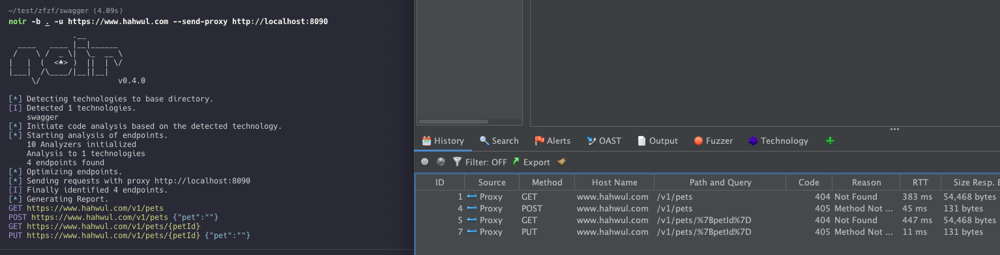
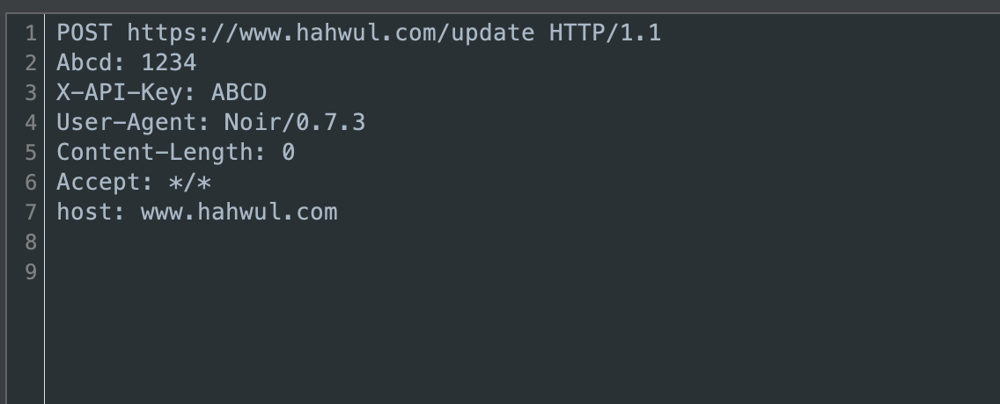
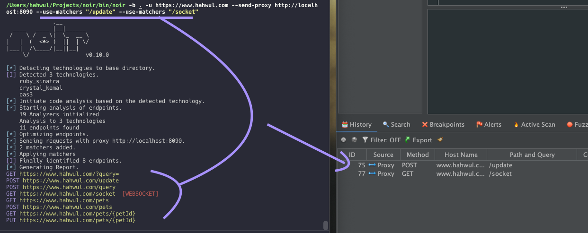

다른 도구로 결과 전송하기
Burp/ZAP을 거쳐 엔드포인트에 요청을 보내거나(probe), Elasticsearch나 웹훅으로 내보냅니다(export).
Noir는 결과를 두 가지 방식으로 보냅니다.
- PROBE: 방금 찾은 엔드포인트에 실제 HTTP 요청을 보냅니다(능동 재전송). 필요하면 Burp Suite나 ZAP 같은 프록시를 거칩니다.
- EXPORT: 엔드포인트 목록을 데이터로 Elasticsearch, OpenSearch, 웹훅 수신기에 보냅니다. 엔드포인트 자체에는 트래픽이 가지 않습니다.

Probe는 재전송, Export는 적재. 결과가 어디로 가야 하는지에 맞춰 고르면 돼.
Probe
관련 플래그:
| 플래그 | 용도 |
|---|---|
--probe |
찾은 엔드포인트마다 HTTP 요청 전송 (-u 필요) |
--probe-via URL |
이 프록시 URL을 거쳐 요청 전송 |
--probe-header VAL |
모든 요청에 헤더 추가 (반복 가능) |
--probe-match VAL |
패턴에 맞는 엔드포인트에만 요청 (URL, 메서드, method:URL) |
--probe-skip VAL |
패턴에 맞는 엔드포인트는 건너뜀 |
--probe와 --probe-via는 서로 독립적입니다. 둘을 함께 주면 모든 엔드포인트에 요청이 두 번 나갑니다(프록시 경유 1회, 직접 1회). 타깃 부하가 두 배가 되므로, 프록시에 트래픽만 쌓고 싶다면 --probe-via만 주세요.
경로 템플릿
/users/{id} 같은 라우트는 그대로 요청할 수 없으므로, Noir가 요청 전에 플레이스홀더를 채웁니다. 단 읽기 전용 메서드에만 적용합니다(GET, HEAD, OPTIONS, QUERY). 숫자로 보이는 이름(id, page, *_id 등)에는 1, 나머지에는 noir가 들어갑니다.
POST, PUT, PATCH, DELETE는 템플릿을 그대로 둡니다. 여기서 값을 채우면 무해한 404가 실제 쓰기 요청으로 바뀝니다(실제 레코드에 DELETE /users/1이 나감). 그래서 Noir가 대신 채우지 않습니다. 프록시를 거치면 템플릿 그대로 도착하니, 필요하면 직접 고쳐서 다시 보내세요.
값을 직접 지정하려면 --pvalue path=...를 쓰세요. 이 값은 모든 메서드에 적용됩니다.
noir scan ./source -u http://localhost:3000 --probe --pvalue path=id=42
자동 채우기는 나가는 요청에만 적용되고, 리포트에는 원래 템플릿이 남습니다. --pvalue path=... 값은 다릅니다. 리포트의 URL에도 들어갑니다(/users/:id가 /users/42로 표시됨).
프록시로 재전송
모든 엔드포인트를 로컬 Burp/ZAP 프록시로 보내 스캐너가 가져가게 합니다.
noir scan ./source -u http://localhost:3000 --probe-via http://localhost:8080
프록시 포트는 꼭 적어야 합니다. --probe-via http://localhost는 포트를 추측하지 않고 거부합니다. 포트 없는 프록시 URL로는 라우팅할 수 없고, 그대로 두면 요청이 프록시를 건너뛰고 타깃으로 바로 나가기 때문입니다. curl -x가 받는 host:port 형태는 받아들이며 http://host:port로 읽습니다.

사용자 지정 헤더
인증 토큰 같은 헤더를 모든 요청에 붙입니다.
noir scan ./source -u http://localhost:3000 \
--probe-via http://localhost:8080 \
--probe-header "Authorization: Bearer your-token"

이 헤더는 -u 타깃에만 붙습니다. 엔드포인트는 대부분 Noir가 -u 뒤에 붙인 경로입니다. 하지만 소스에 scheme과 호스트가 이미 적혀 있던 엔드포인트(OAS servers: 항목, HAR 캡처, 호스팅 백엔드 URL)는 그 호스트를 그대로 쓰고, 그 호스트는 지금 스캔하는 코드에서 온 값입니다. 이런 엔드포인트에도 요청은 나가지만 헤더는 붙지 않습니다. Noir는 헤더를 뺀 호스트를 한 번 알려줍니다.
▲ Probe: --probe-header values withheld from https://collector.example.com — it is not the --url target. Endpoints on that host are still probed, without your headers.
내보내기 대상(--export-es, --export-webhook)은 영향을 받지 않습니다. 그 호스트는 직접 지정한 것이므로 --probe-header가 그대로 인증에 쓰입니다.
Match / skip
프록시로 보낼 엔드포인트를 좁힐 수 있습니다. 패턴에는 URL 부분 문자열, HTTP 메서드(대소문자 무시), method:URL 조합을 쓸 수 있습니다.
# API 엔드포인트만
noir scan ./source -u http://localhost:3000 --probe-via http://localhost:8080 --probe-match "api"
# GET 요청만
noir scan ./source -u http://localhost:3000 --probe-via http://localhost:8080 --probe-match "GET"
# POST 요청 제외
noir scan ./source -u http://localhost:3000 --probe-via http://localhost:8080 --probe-skip "POST"
# /api 경로의 POST만
noir scan ./source -u http://localhost:3000 --probe-via http://localhost:8080 --probe-match "POST:/api"
# /admin 경로의 GET 제외
noir scan ./source -u http://localhost:3000 --probe-via http://localhost:8080 --probe-skip "GET:/admin"
지원 메서드: GET, POST, PUT, DELETE, PATCH, HEAD, OPTIONS, TRACE, CONNECT, QUERY.
--probe-match와 --probe-skip은 여러 번 쓸 수 있고, 함께 적용됩니다.
noir scan ./source -u http://localhost:3000 \
--probe-via http://localhost:8080 \
--probe-match "GET" --probe-match "POST:/api"
아래 스크린샷은 이전 릴리스에서 찍은 것으로, 위 예시 대신 URL 패턴 /update와 /socket 두 개를 v0 별칭 --use-matchers로 지정했습니다. 그래서 그 두 엔드포인트만 프록시로 전달됩니다.

Export
엔드포인트 목록을 외부 저장소로 보냅니다. probe와 달리 엔드포인트 자체에는 트래픽이 가지 않습니다.
| 플래그 | 용도 |
|---|---|
--export-es URL |
목록을 Elasticsearch에 색인 |
--export-opensearch URL |
위와 같고 OpenSearch용 (이 요청 형태에서는 프로토콜이 같음) |
--export-webhook URL |
목록을 JSON 문서 하나로 HTTP 수신기에 POST |
Elasticsearch / OpenSearch
문서 엔드포인트의 전체 URL을 넘기세요. Noir는 받은 URL 그대로 POST하며, 인덱스나 _doc 경로를 따로 붙이지 않습니다.
noir scan ./source --export-es http://localhost:9200/noir/_doc
포트가 없는 http:// URL은 9200 포트를 씁니다. 포트가 없는 https:// URL은 scheme 기본값(443)을 그대로 씁니다. 관리형 클러스터(AWS OpenSearch Service, Elastic Cloud)와 TLS 리버스 프록시가 443에서 받기 때문입니다.
인증은 --probe-header를 재사용합니다. 이름과 달리 이 헤더는 export 요청에도 붙습니다.
noir scan ./source --export-es https://my.cloud.es.io/noir/_doc \
--probe-header "Authorization: ApiKey <base64-key>"
Webhook
목록 전체를 JSON 문서 하나로 POST합니다.
noir scan ./source --export-webhook https://hooks.example.com/noir
본문에는 필드 세 개가 들어갑니다.
| 필드 | 내용 |
|---|---|
endpoints |
-f json이 출력하는 것과 같은 배열 |
endpoint_count |
endpoints의 항목 수 |
noir_version |
이 문서를 만든 noir 버전 |
Slack incoming webhook, Discord 웹훅, Zapier/n8n 트리거, 사내 수신기는 모두 아무 JSON 본문이나 받으므로, 이 형태 하나로 흔한 목적지를 다 쓸 수 있습니다. 수신기가 자기만의 형태(예: Slack의 {"text": ...} 블록)를 요구하면 중간에 변환기를 두세요. Noir에는 플랫폼별 포매터가 없습니다.
TLS
probe와 export 모두 TLS 인증서를 검증합니다. 자체 서명 인증서를 쓰는 사내 호스트라면 --tls-skip-verify로 검증을 끌 수 있습니다.
프록시 전송은 예외입니다. --probe-via는 항상 검증을 건너뜁니다. 인터셉트 프록시는 자체 인증서를 내밀기 때문에, 검증하면 재전송하는 모든 요청이 핸드셰이크에서 실패합니다.
v0 별칭
v0.x 플래그 이름도 그대로 동작합니다. Noir가 경고 없이 v1 이름으로 바꿔 줍니다.
| v0 플래그 | v1 플래그 |
|---|---|
--send-req |
--probe |
--send-proxy URL |
--probe-via URL |
--send-es URL |
--export-es URL |
--with-headers VAL |
--probe-header VAL |
--use-matchers VAL |
--probe-match VAL |
--use-filters VAL |
--probe-skip VAL |
v0 이름을 쓰는 CI 스크립트와 Dockerfile은 고치지 않아도 됩니다. 도움말, 문서, 셸 자동완성에는 v1 이름만 나옵니다.